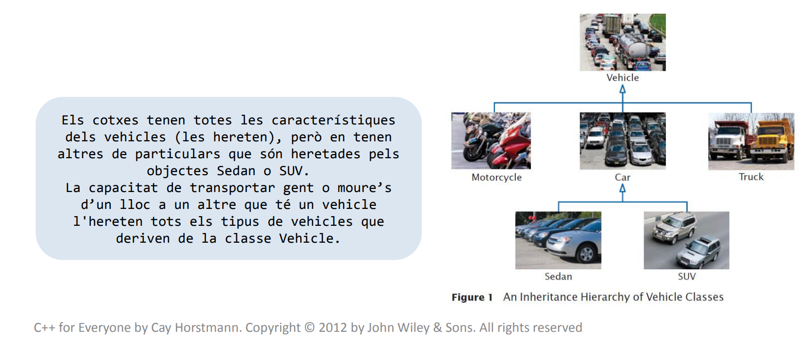

2.2 RELACIÓ D'HERÈNCIA
En el disseny de classes apareix la relació d'herència. Aquesta s'estableix entre una classe més general (
classe base) i una de més especialitzada (
classe derivada). Aquesta segona
hereta dades i comportament de la classe base.

Operacions
La classe derivada hereta tots els mètodes (consultors, modificadors i mètodes de classe) de la classe base, excepte el constructor, implicant que cada classa (derivada o base) necessita els seus propis constructors. Per tant, la interfície (sense els constructors) de la classe base és un subconjunt de la interfície de la classe derivada.
Les classes derivades han de tenir elements diferenciadors (noves operacions o especialitzacions de les existents).
La herència és transitiva: si B hereta d'A i C her3eta de B, C també hereta d'A.
Relació entre classes
Hem vist dos tipus de relacions entre classes:
- Ús: Una classe B fa servir una classe A.
- Composició: un objecte de tipus B conté un objecte de tipus A.
- Herència: un objecte de tipus B "és" de tipus A, és una especialitzaicó d'un objecte de tiups A.
- classe A és la classe base o superclasse
- classe B és la classe derivada o subclasse